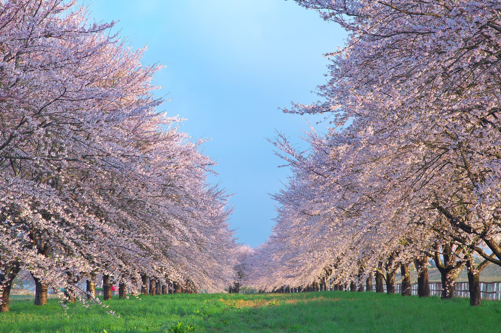
はじめに
また、武田塾木更津校での4年間の勤務、お疲れ様でした。
木更津校で関わりのあった講師や校舎長の皆さんから
天野さんへのメッセージをいただきましたので、
ぜひご覧ください。
MESSAGES
【1年生】
-
ご卒業おめでとうございます！
そして1年間お世話になりました!
天野さんの第一印象は飲んだときのギャップがすごい大きい人でした笑。
「リアルの大学生ってこんな感じか」と思ったことを覚えています。
チーフ会議に参加させてもらうようになってから関わりが増えたように思います。
仕事ができる人っていうのはこういう人を指すんだ、と思って漠然とやる気が湧いた一方で、
自分なんかの発言は天野さんが既に却下した考えで
何を発言しようかとビビりながらチーフ会議に参加していた時がありました。
天野さんは僕のなかで間違いなく今年度の1つの道標となった方です。
どれだけ天野さんから技を盗むことが出来たのか、
天野さんがいるという価値を最大化出来たか自信はありませんが、
天野さんのおかげで成長出来たことが沢山あります。
天野さんが卒業されてしまうことはとても寂しいですが、
これまでの想い出を胸に留めて今後も精進していこうと思います！
いろんな話ができてとても楽しかったです！
ありがとうございました！
東雄杜
-
4年間お疲れ様!!!
石井瑛也
-
1年間短い間でしたが本当にありがとうございました!!
研修から特訓を見ていただいて、いつも丁寧に指導をいただけて
もっといい特訓ができるように頑張ろうとモチベーションに繋がりました！
社会人になっても頑張ってください🥲私はいつもポケポケにいます👍🫡
4年間本当にお疲れさまでした!
内海真衣
-
僕が講師になった三月末から、最終日まで本当にかっこいい存在でした！
多忙さ故か、二次会などでの率先したはっちゃけ具合とそのギャップには、
自分含め多くの人が心を打たれたと思います！
本当に4年間お疲れ様でした!
これからの天野さんのご活躍をお祈りしています。
ご卒業おめでとうございます！！！！
江上大翔
-
一年間ありがとうございました！！
校舎で一緒に飲みゲーしたのはいい思い出です！！
お金めっちゃ稼いでカッコいい車買ってください🚗
小佐原宙汰
-
天野さんには、歓迎会や講師会の時にたくさんお世話になりました。
いつも的確でわかりやすい指示をして下さり、
初年度の僕にとってとてもありがたい存在でした。
ありがとうございました！新天地でのご活躍をお祈りしてます！
小原航希
-
約3年間ありがとうございました。
現役、浪人、大学全てお世話になりました笑笑
生徒の頃は天野さんのことをしっかりしていて厳しい人だと思っていました。
今ではその印象に面白さが重なっています笑笑
ご飯も頻繁に誘ってくれるし、相談も気軽に乗ってくれるし、
塾で僕が困っているとすぐに声をかけてくれるしもう最高で尊敬してる先輩です。
同じ大学を目指して入学できて本当に良かったです。
平野遙音
-
1年間武田塾というものがどういうものか全くわからない自分に
色々教えていただきありがとうございました!
社会人になっての益々のご活躍をお祈り申し上げます！
藤原盟矢
-
1年間ありがとうございました！
お話しする機会は多くなかったですが、
チーフとしていつもみんなをまとめてくださっている姿が本当に素敵だなと思っていました。
お世話になりました😭守美羽
【2年生】
-
長い間お世話になりました！
チーフ講師として最後の最後まで塾の運営に携わっていて尊敬です！
いっしょに働けて楽しかったです！
この間の講師研修で教えていただいたことをこれから生かしてがんばります！
天野さんの新天地でのご活躍を心より応援してます！
ありがとうございました！礒貝光優
-
受験生時代も含めて計3年半（？）もお世話になりました!
自分が生徒だったとき、使用する参考書や教材をルートを基準にしつつも柔軟に決めて頂いたこと、
そして特訓では、ただ一方的に授業をするだけではなく、
一緒になって問題を解いたり長文を読んで頂いたことが合格に繋がったと信じています。
（過去問でverdictから原神の話になったこと今でも覚えてます）
特に生徒のレベルに合わせてどの参考書をやるか決め、
必要があれば柔軟にハイレベルな教材を使うなど、
生徒一人一人に合わせた対応を取ることは、今の自分の特訓でも意識しています！
また講師として武田塾に入ってからは、
講師研修、その後のフォローアップで度々お世話になりました！
講師や先輩として頼れる大人な一面と、お酒を飲んだときの一面のギャップもだいすきです！
生徒時代からいるのが当たり前だったので、正直なところ卒業の実感は全く湧いていないのですが、
就職後もご活躍されることを祈っています！
3年以上にわたり自分のお手本になって頂き、本当にありがとうございました!!
大村謙太
-
4年間お疲れ様でした!
それから、受験生時代から約2年半、本当にお世話になりました。
特訓での天野さんの言葉がなかったら、早稲田を受験できていなかったと思います。
講師になってからも、チーフになってからも、天野さんの存在は私の中で精神的支えでした!!!
新しい職場でも、体に気をつけて頑張ってください。応援しています！
ありがとうございました！
下大迫るい
-
天野さん、ご卒業おめでとうございます！
どうもこんにちは、いちばんかわいい後輩のつかさきでーす！
「天野さん」って呼ぶのはなんだかよそよそしいというか、
へんな感じするのでいつも通り「天野くん」と呼ばせてください！！
思い返せば、天野くんとの思い出はたくさんありますね。
あんなことやこんなこと、そんなことやどんなこと？？
いや、ちゃんと覚えてるから！全然出てこねえとか、そんなことないから！！！
あ、あれだよね！天野くんって、事務シフトいっぱい入ってたよね！！
なんか生徒も、いっぱい持ってて、チーフ講師とか、やってたよね！！！
冗談はさておき、、天野くんには本当にお世話になりました！
特に天野くんが4年生になってからは一緒にいることが多くなったりして、色々な話をしましたね!
生徒や特訓とかの塾内の話はもちろん、それ以外にも就活の相談乗ってくれたりとか、
飲みに行ったりとか、悪口大会したりとか、もっとプライベートな話をしたりとか！
人生相談てきなことをしたこともありましたっけ笑笑
そんなことのすべてが楽しく大切な思い出です！！
僕と天野くんは、全く違うタイプの人間に見えて実は結構似ているんじゃないかなと、個人的に感じています。
仕事ってなると全然タイプが違うかもしれませんが、例えばマイペースなとことか、
意外と人情深くて面倒見のよいとことか、似てるんじゃないかなーと思っています。
マイペースなのはまぁ置いといて、そんな天野くんの人情深さに惹かれて、
僕は「仲良くなりたいな」と思えたんだとおもってます！
だから1人の後輩として、僭越ながら最後に僕が伝えたいことは、「変わってくれるなよ」ってことです。
社会人になって忙しくなり、やがては家庭を持ったりして、もっともっと大人になっていくことと思います。
が、そういう人情に厚くて面倒見がよくて優しいところはいつまでも変わらずに持ち続けて欲しいです！！
あ、やべなんか泣けてきましたね。あーなんか涙出そう、
うおおおぉぉぉああぁぁあ"あ"ーー！！！
この世の中を、日本をぉお"お"お"おおおー!!
日本を変えたい、その一心で、ぇえ"え"え"!!
でもね、みなさんになにがわがるって言うんですがぁー！！天野くんのなにがわがるって言うんですかぁー！
お酒を飲んだらおかしくなっちゃうし、調子にのってくると、○○○（ピー）に対する愛まで叫び始めるし！！
だがら、わだじがここで伝えたいのは、こんな感じだぁあああああ"あ"ーー！！
以上で、謝罪会見を終わりまーす。
塚嵜勇太
-
天野さん!約2年間本当にお世話になりました!!
そして4年間お疲れ様でした!
塾のためにいろんなことをしてくださり、感謝しかありません。
私が1年生の時はあまりお話しする機会がありませんでしたが、
2年生に上がってからお話しする機会が増えてめちゃうれしかったです!
天野さんの普段温厚な感じでたまに毒吐くのが結構ツボでした笑笑
天野さんとする愚痴トークが個人的に好きだったので、
塾からいなくなっちゃうのがとてもさみしいです、
こっちに戻ってきたときは武田に寄ってください！
天野さんとちゃんと飲んだことないので、飲みにも行きたいです！！
就職先でも、無理せずにいい感じに頑張ってください！
応援してます☀福田彩瑛
-
4年間武田塾での勤務、本当にお疲れ様でした!!
天野さんには、私が生徒のときから担当講師としてほんまにめちゃくちゃお世話になりました😭😭
天野さんとの特訓はいつも楽しすぎて、体感5秒くらいだったの覚えてます！
あと、いつも話しすぎて特訓がオーバーして焦ってたのも良い思い出です笑
印象的なのは、ラストの特訓のときに
「大学生になったら3男1女に気をつけろ❗️❗️❗️」って言われたことです！
でも全然何もなかったです😮💨
あと、天野さんはいつもお洋服がお洒落な印象です！
生徒時代に着てた水色のカーディガンが可愛すぎて、
特訓前まで続いてた酷い頭痛が治ったことあります🧠💊
講師になってからは思ってたより話す機会がなくて𝙨𝙤 𝙨𝙖𝙙でしたが、
たまにお話できて𝑯𝒂𝒑𝒑𝒚でした！！
色々落ち着いたら、ぜひ飲みに連れてってくださいー！！！
体調第一で、カロリーメイト食べて社会人乗り越えてください🍪
本当にありがとうございました🙇🏻♀️🙇🏻♀️🙇🏻♀️！富士本和奏
-
2年間お世話になりました。
天野さんの生徒への向き合い方を見て、多くのことを学ばせていただきました。
生徒のために時間を惜しまない姿勢を、心から尊敬しています。
あと、涙の女王を教えてくれてありがとうございました。
またおすすめの韓ドラあったら教えてくださいね。
次のステージでのご活躍を願っています！本当にありがとうございました
牧野耕大
-
2年間ありがとうございました！
些細なことでも悩みを相談すると、
親身になってすぐに解決策をくださる天野さんを頼りにしていました。
いなくなってしまうと考えるととても寂しいです。
仕事に真面目に取り組んでるだけでなく、
ふざけた話も一緒にしてくれてとても楽しかったです！
仕事面はもちろん、人柄という面でもとても尊敬しています。
天野さんのような人にはなれないかもしれませんが、
少しでも近づけるようにこれから頑張りたいと思います。
天野さんの将来が素敵なものでいっぱいになっていますように！！！武田塾から応援してます！
気が向いたらぜひ武田塾に遊びにきてください！
本当にお世話になりました。ありがとうございました！山本澪
-
とても頼りになりました！！！
新しい場所でも頑張ってください！
ありがとうございました！
山本隆貴
【3年生】
-
これまで大変お世話になりました！
天野さんと初めてお話したのはなぜか植田さんと3人でトランプが始まった時だったと思います笑(覚えてますか...?笑)
その時に特訓のアドバイスや難しさについて色々教えてくださり、
熱意を持って生徒と向き合っている方なんだなという印象を受けずっと尊敬していました。
チーフ講師として責任も大きかったと思いますが、
天野さんの穏やかで真面目なキャラクターあってこそ
武田塾がどんどん良い方向にまとまっていると感じてます！(何もできずすみません!!!)
最後の方は全然話せなくて残念でしたが、新天地でも沢山ご活躍されることと思います！
体調には気をつけて頑張ってください！
応援しています✨
ありがとうございました！関美南
-
4年間お勤めご苦労様でした！！
天野さんは先輩方(在原さん下川さん等)にいじられてるイメージがとても印象的でした！！
とっても優しい雰囲気で話しかけやすく、
自分が1年生の頃から仲良くしてくださり嬉しかったです！
天野さんがチーフになってからは校舎全体のことを考えていてとても忙しそうに見えました(泣)
来年からは僕に任せてくださいと言いたいところですが、
単位がやばそうなのでそっちに専念します！笑
社会人になっても楽しく頑張ってくださいね！！
落ち着いたらまた色々相談させて欲しいので、ぜひ飲みに行きましょう！！楯岡佑斗
-
今までありがとうございました！！
下川さんの家で飲み会をしたとき天野くんのいろんな話を聞いた事を懐かしく思います。
めちゃ楽しかったですね！
就活の相談にも乗っていただきありがとうございました！
天野くんがこれから社会に出てご活躍されることを祈っています！！富岡隼也
【4年生】
-
2年程ブランクがある自分を優しく受け入れてくれました。
圧倒的に計画力があるところが尊敬できるなと思っていました。
お疲れ様！ありがとう！！江上大晴
-
4年間ありがとう！
特にここ2年は、個人的に武田の講師の中でダントツで一番喋ったと思います！
2人でやったチーフ業務ですが、業務量は絶対に天野くんの方が多かったと思います。笑
かなり頼ってしまいましたが、文句も言わずにこなしていく姿にとても助けられました！
1-3年でなぜ同期会をやらなかったんだという後悔があるくらい、
4年での同期会は良く喋れてめちゃめちゃ楽しかったです！
また時々4人で集まって飲みでもいこう！
時間に余裕ができたら教えてください！
最後に4年間ほんとにありがとう！合田健太
【大学院1年生】
-
卒業おめでとう！
4年間本当にお疲れ様でした！
面接のために天野くんが初めて校舎に来た日、
川上航大と全く同じ受験してるじゃんっていう話をしたのが懐かしいです。
（前日に中条さんから東の人が来るって聞いて、
その日は特訓なかったんだけどそのために校舎行った気がする）。
天野くんが来てくれたの本当に嬉しかった！
校舎で特訓始まるまでの時間に時々生徒のために赤本を解いてたりして、
生徒思いなのと結果にこだわる姿も印象的でした。
校舎運営の面では、日々の連絡や特訓レポート等、
自分が雑すぎてかなり迷惑をかけてしまったと思います。
前から伝えたかったのですが反省してます、ごめんなさい。
陰でフォローしてくれたこと感謝しています。
これからも天野くんが充実した人生を送れることを願ってます、4年間ありがとう！植田佳和侑
-
今までありがとうございました！
池田さんや在原くんが卒業してから、だれが武田を引っ張っていくのか不安でしたが、
天野くんが頑張ってくれたおかげで何とかなって本当に頼もしかったです。
後輩に任せて先輩なのに不甲斐ない笑。
これからもそのリーダーシップを活かして頑張ってください！河西倫太郎
【校舎長】
-
半年間ありがとうございました！大変心強かったです！
またいつでも遊びに来てください！村田将
【異動された方々】
-
チーフとして最後まで校舎を支えてくれて本当にありがとう！
天野君の存在が木更津校を確実に前進させてくれました。
就職後も、ここでの経験を活かしてさらなる活躍を応援しています！！小沼裕次朗
-
お久しぶりです！下川です！
この度はご卒業おめでとうございます！
そして、これまでたくさんお力をお貸しいただき、本当にありがとうございました！
天野くんにはめちゃくちゃ支えられていました！
優秀層の生徒たちをしっかりとグリップし、
見事合格へ導いてくれた手腕には本当に感謝しています！
私が異動する前に下川邸で話した内容がめちゃくちゃ面白くてすごく印象に残っていて、
もっと最初からたくさん話しておけばよかったと後悔しているくらいです！
天野くんの今後のますますのご活躍を祈っております！下川慶悟
GALLERY
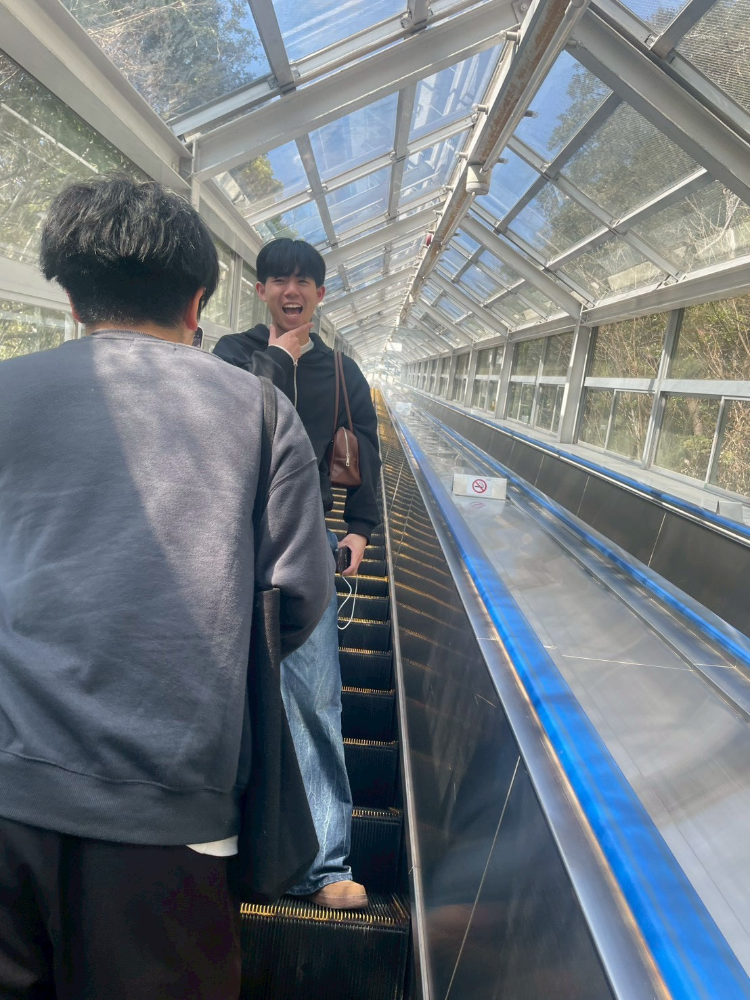
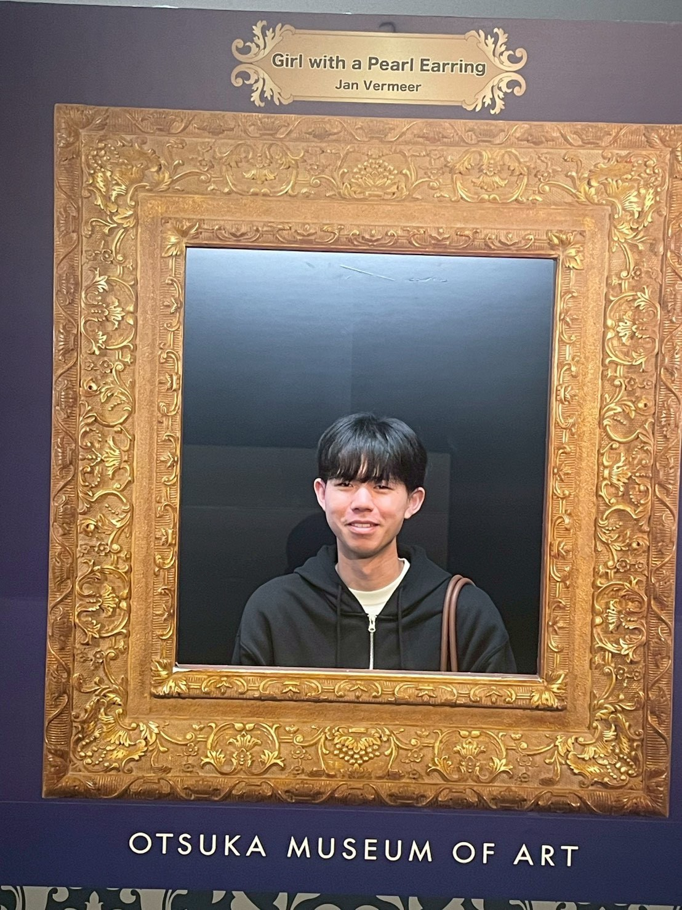
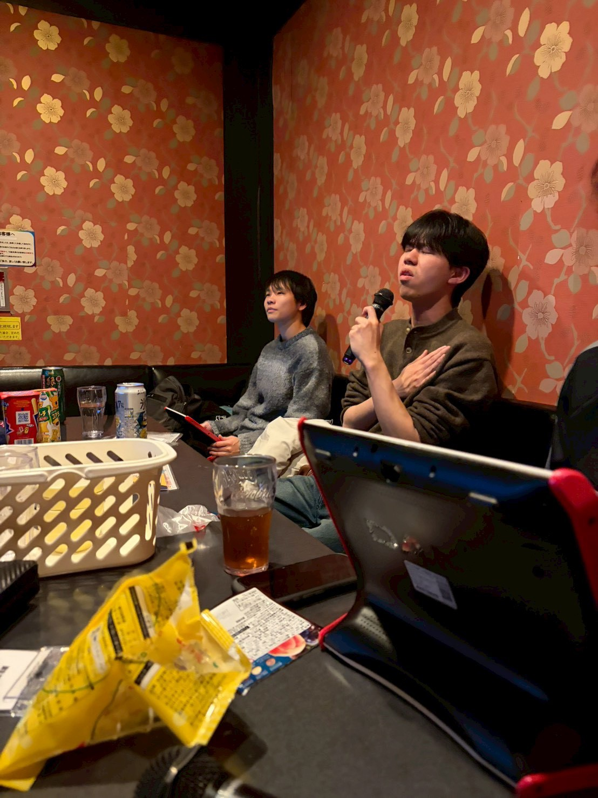
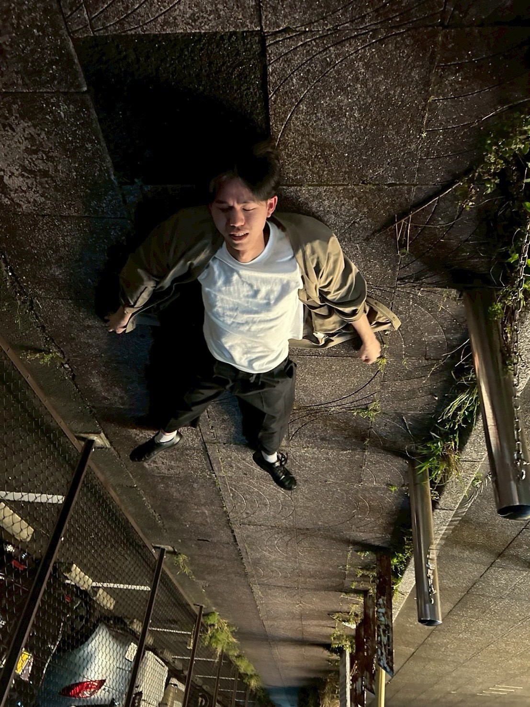
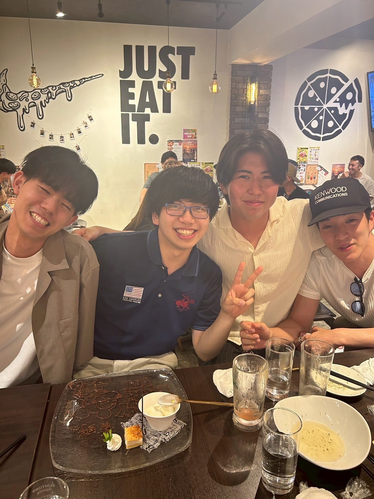
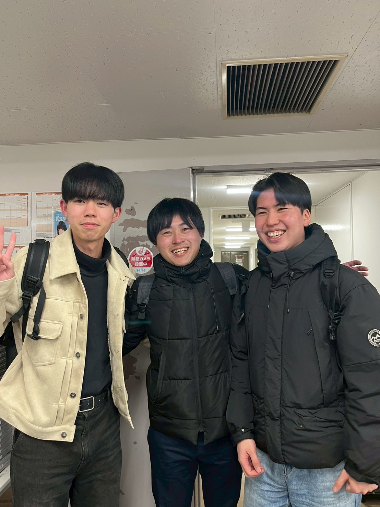
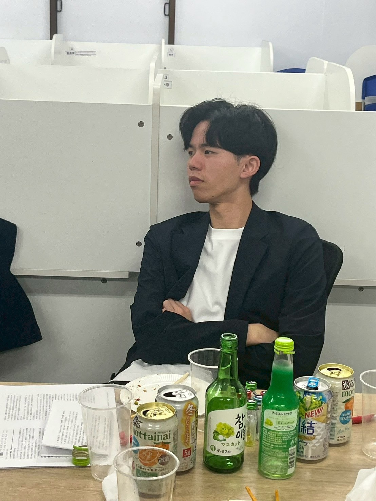
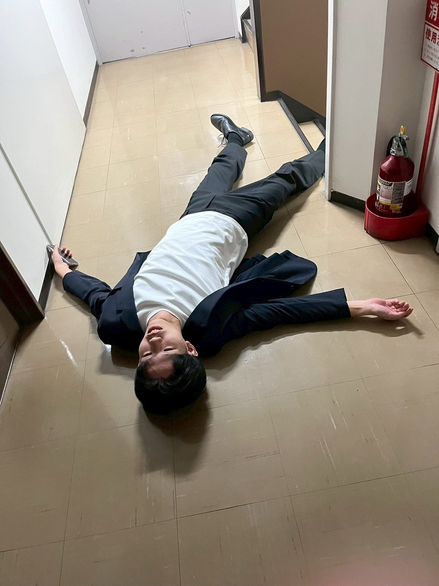
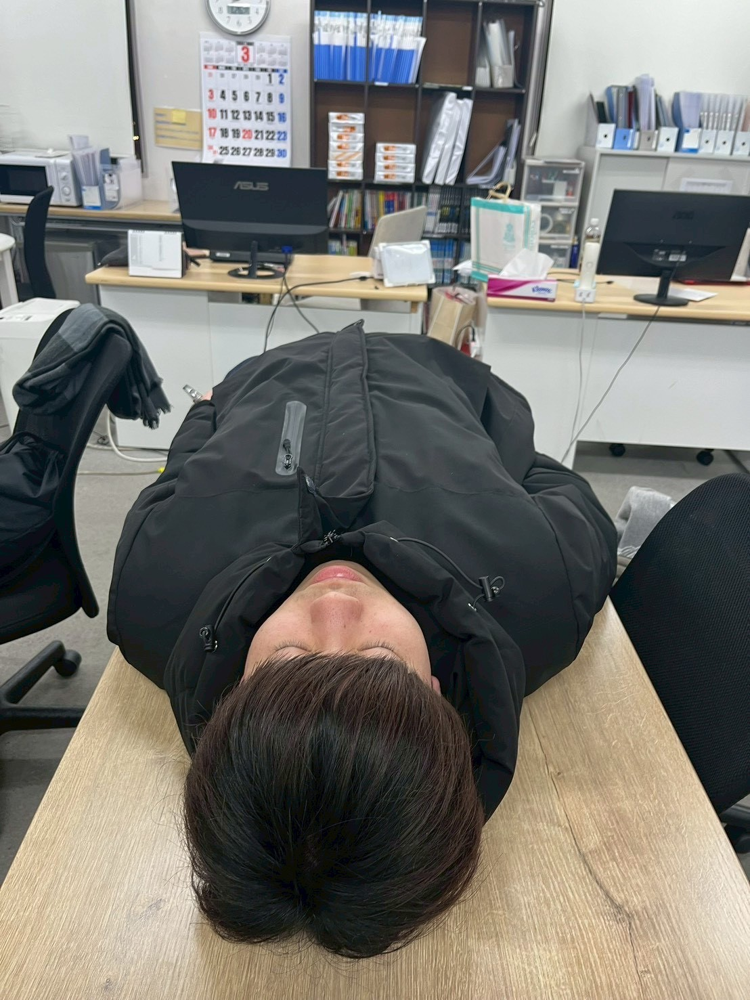
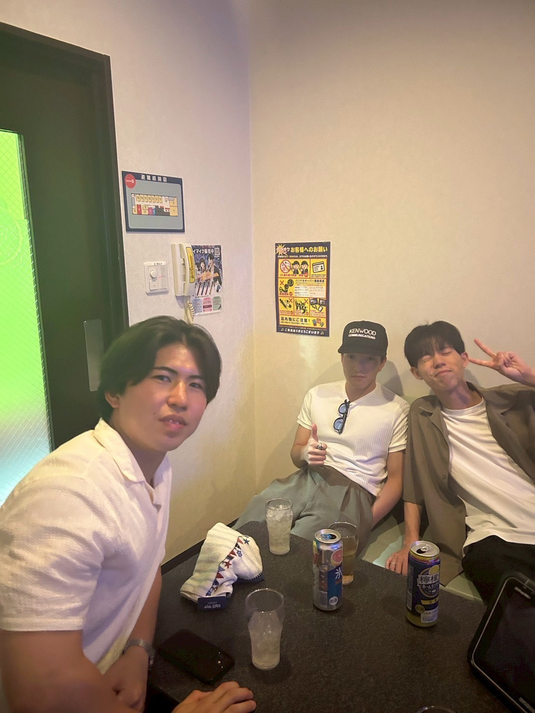